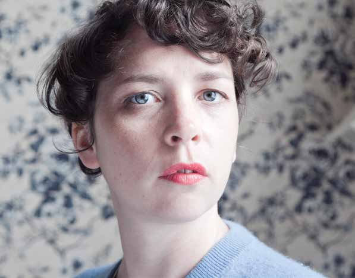

Lisa O'Neill

2013 WAS AN INCREDIBLE YEAR FOR LISA O'NEILL. With a new album Same Cloth or Not, she won over fans and critics alike. Her rich aged folk voice, melancholic melodies and brilliant lyrical wit marked her as a genuinely unique Irish artist. Her live shows have become much talked about affairs with the audience welling up one moment, and in stitches the next. The new album was recorded in a beautiful cottage rented in Wicklow in the winter months with David Kitt producing and Karl Oldum engineering and includes her regular band-mates Stina Sandstrom (vocals) and Mossy Nolan (bouzouki). Having toured Ireland and mainland Europe in 2013 with Glen Hansard, supported David Gray on his Irish tour and James Yorkston on his UK tour, Drogheda Arts Festival is delighted to welcome this talented singer / songwriter to Drogheda for one night only!
"One of the most outstanding Irish albums of the year."- The Irish Times
"O'Neill is in a league of her own, her song craft and performance capabilities really are extraordinary." – Eamon Sweeney, the Irish Independent
Saturday 3 May
Venue: Droichead Arts Centre, Stockwell Street
Times: 8:30pm Sat 3 May
Tickets: 15 in advance, 17 on day